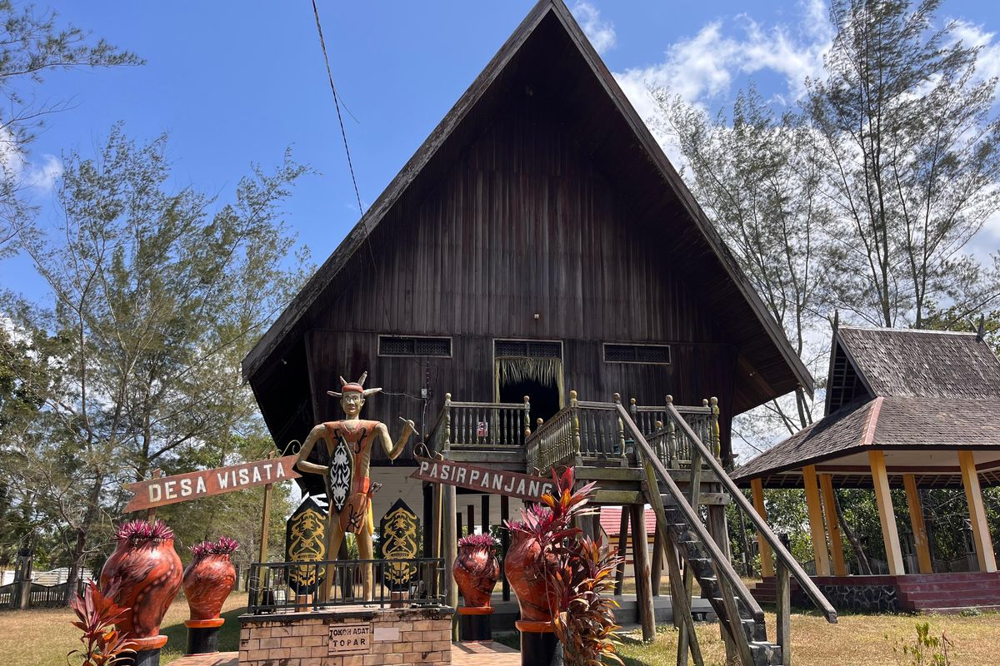
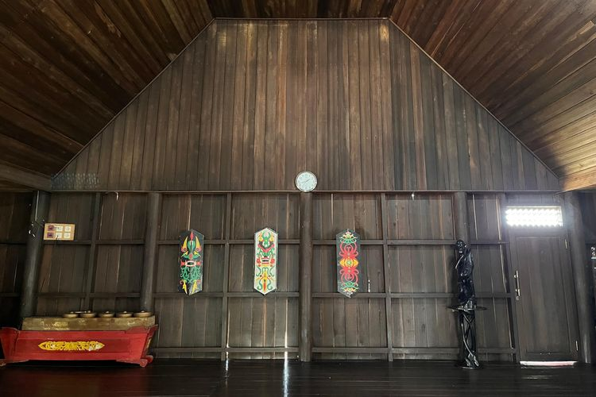

Mau Lihat Rumah Betang di Pangkalan Bun? Begini Caranya
8 agustus 2026
KOMPAS.com – Ingin melihat langsung rumah tradisional suku Dayak saat liburan ke Pangkalan Bun, Kalimantan Tengah? Rumah Adat Betang Pasir Panjang bisa menjadi destinasi wisata budaya yang mudah dikunjungi, karena lokasinya hanya sekitar delapan menit dari Bandara Iskandar.
Menariknya, wisatawan tidak perlu melakukan reservasi dan bisa masuk secara gratis. Rumah Adat Betang Pasir Panjang berada di Jalan Utama Pasir Panjang, Kecamatan Arut Selatan, Kabupaten Kotawaringin Barat, Kalimantan Tengah.
Lokasinya berjarak sekitar 4,5 kilometer dari Bandara Iskandar dan dapat ditempuh menggunakan mobil atau sepeda motor dalam waktu sekitar delapan menit.
Cara berkunjung ke Rumah Betang Pasir Panjang
Berdasarkan pengalaman Kompas.com berkunjung pada Minggu (26/7/2026), wisatawan tidak perlu melakukan reservasi sebelum datang.
"Pengunjung cukup langsung mendatangi lokasi, kemudian mengisi buku tamu yang tersedia di meja petugas. Setelah itu, wisatawan bisa langsung masuk untuk menjelajahi bagian dalam Rumah Betang Pasir Panjang. Tempat wisata budaya ini juga tidak mengenakan biaya masuk. Artinya, siapa pun, termasuk solo traveler, dapat berkunjung tanpa perlu membeli tiket.
Jam buka Rumah Betang Pasir Panjang

Rumah Adat Betang Pasir Panjang buka setiap hari mulai pukul 07.30 WIB hingga 16.00 WIB. Karena jam operasionalnya hanya sampai sore hari, sebaiknya wisatawan datang pada pagi atau siang hari agar memiliki waktu lebih leluasa untuk berkeliling.
Ada apa saja di Rumah Betang Pasir Panjang?
Rumah Adat Betang Pasir Panjang merupakan replika rumah adat Dayak yang difungsikan sebagai tempat edukasi budaya. Di dalamnya, pengunjung dapat melihat berbagai koleksi khas masyarakat Dayak, seperti pakaian adat, aksesori tradisional, hingga senjata tradisional.

Jika ingin mengetahui sejarah maupun fungsi benda-benda tersebut, wisatawan bisa bertanya langsung kepada petugas yang berjaga di lokasi. Salah satu aktivitas yang paling menarik adalah mencoba menggunakan sumpit, senjata tradisional masyarakat Dayak, yang dahulu digunakan untuk berburu maupun berperang.
Pengalaman ini dapat dicoba tanpa biaya tambahan dengan pendampingan petugas.
Mengenal fungsi rumah betang
Selain melihat koleksi budaya, wisatawan juga dapat mempelajari fungsi rumah betang sebagai hunian tradisional masyarakat Dayak.
Rumah ini berbentuk panggung dan dibangun menggunakan kayu ulin, di atas tiang-tiang yang tinggi. Bentuk tersebut dibuat untuk melindungi penghuni dari ancaman binatang buas sekaligus banjir. Rumah Betang Pasir Panjang yang Kompas.com kunjungi ini merupakan replika. Sementara itu, rumah betang asli umumnya berukuran jauh lebih besar dan dapat dihuni oleh beberapa kepala keluarga dalam satu bangunan.